Números reales
Resumen
- Conjuntos de números:
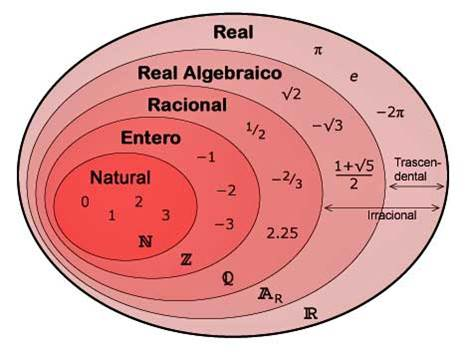
- Valor absoluto:
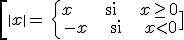
- Distancia: d(a,b) = |b-a|
- Intervalos y entorno:
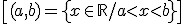 abierto
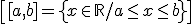 cerrado
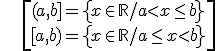 semiabierto o semicerrado
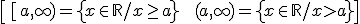
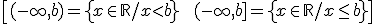
de extremo infinito
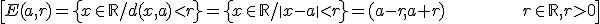 entorno
- Potencias:
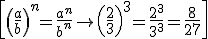
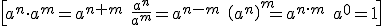
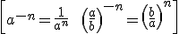
- Una estimación de un número real es otro número real próximo al dado. Una aproximación de orden n de un número es una estimación de dicho número en la que se prescinde de las cifras de órdenes de unidad inferiores a n. Puede ser:
·Por defecto, si todas las cifras de la estimación son exactas (es menor que el número)
·Por exceso, si son exactas todas las cifras excepto la que indica el orden, que es una unidad mayor (es mayor que el número)
El redondeo de orden n de un número es la aproximación de orden n más próxima al número.
- La resta entre el número exacto y el aproximado se llama error absoluto.
- El error relativo es:
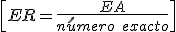
- La notación científica se hace usando un número del intervalo [1,10) multiplicado por una potencia de 10: a · 10b , donde “a” se llama mantisa y “b” se llama exponente.
- Raíces
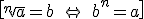
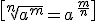
- Un radical es una raíz cuadrada que no puede ser reducida a un número entero. Dos radicales son equivalentes si expresan el mismo número
- Radicales semejantes son aquellos que tiene el mismo radicando e índice.
· Sólo se pueden sumar o restar radicales semejantes
· Si los radicales tiene el mismo índice se multiplican o dividen los radicandos y si no lo tienen, tenemos que buscar radicales equivalentes con el mismo índice, usando el mcm
· 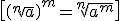
- Racionalizar es eliminar los radicales del denominador de una fracción
Obra publicada con Licencia Creative Commons Reconocimiento No comercial Compartir igual 4.0